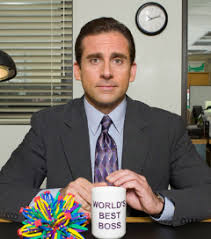

| Rank | Character Name | Image | Show | Character Traits | Popularity Score |
|---|---|---|---|---|---|
| S | Walter White | |
Breaking Bad | Intelligent, Ruthless, Complex | 10 |
| A | Tyrion Lannister | Game of Thrones | Witty, Resourceful, Loyal | 9 | |
| B | Homer Simpson | The Simpsons | Funny, Lovable, Clumsy | 8 | |
| C | Michael Scott |  | The Office | Insecure, Humorous, Well-Meaning | 7 |
| D | Daenerys Targaryen | Game of Thrones | Ambitious, Determined, Flawed | 6 | |
| S | Eleven | Stranger Things | Brave, Strong, Empathetic | 10 |
Ranking TV characters was an enjoyable exercise that highlighted the complexity of character development in television shows. Characters like Walter White and Eleven stood out due to their profound transformations and relatability. It was fascinating to see how traits such as intelligence and bravery contributed to their popularity. Additionally, this activity helped me appreciate the writing and storytelling that goes into creating memorable characters. Overall, this tier list reflects not only personal preferences but also the impact these characters have had on popular culture.